更新于 2026-10-04。本篇对应桌面版 v0.5.0-beta.3。截图沿用既有 K12 专属皮肤演示；文中作业与画作素材为「AI 生成示例 · 非真实学生作业」。
上一篇《河蟹 AI 让你「父慈子笑」》讲的是"它凭什么敢让你拿去教孩子"——验算证据链、本地错题资产、编译期可移除的场景包。这一篇不谈原理，只做一件事：带着你，从零把一整套用起来。模型配好以后，跟着截图一步步点，就能拍第一张作业照。
先记住一句话：孩子不直接对着 AI，是你（家长）用 AI 备课，再去教孩子。本文按桌面版连接本机服务演示，错题、学情、照片保存在这台电脑里；若连接云端服务，学习资产则保存在服务所在机器。使用云模型时，处理所需的题目、图片和上下文会发给你配置的服务商。所以第一步不是"跟 AI 聊天"，而是"给孩子建一个专属辅导助手"。
开始前先确认版本：请先下载并安装河蟹 AI 桌面版 v0.5.0-beta.3，再到「设置 → LLM 服务商」配好模型。拍照要用能读图、能推理的模型；软件开源免费，第三方模型调用按服务商计费。
想用这一篇的专属外观，到「设置 → 系统设置」，把「K12 外观」切成「K12 专属皮肤」，浅色、深色都可以。
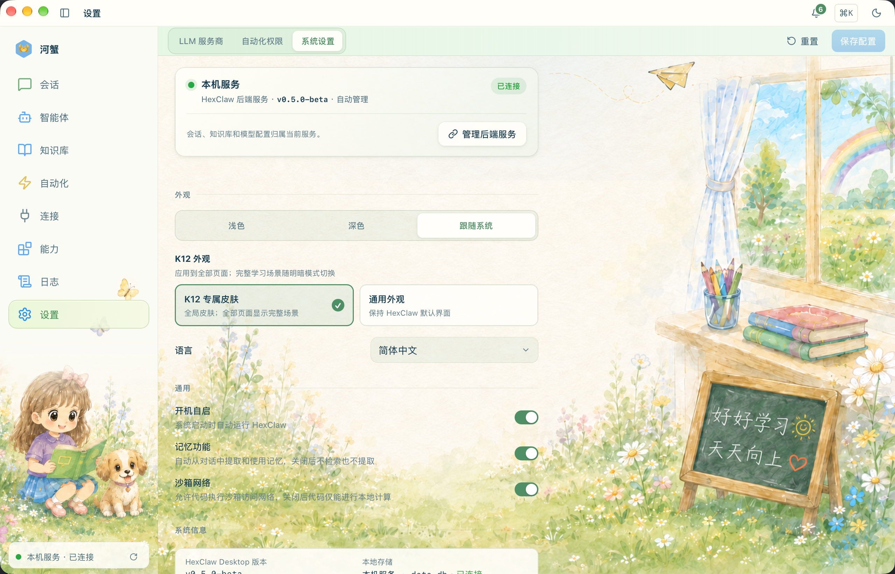
第一步 · 给孩子建一个辅导助手
左侧点「智能体」→「模板库」，在「作业辅导助手」卡片点「使用此模板」。也可以从右上角「新建智能体 → 从模板库开始」进入同一处。
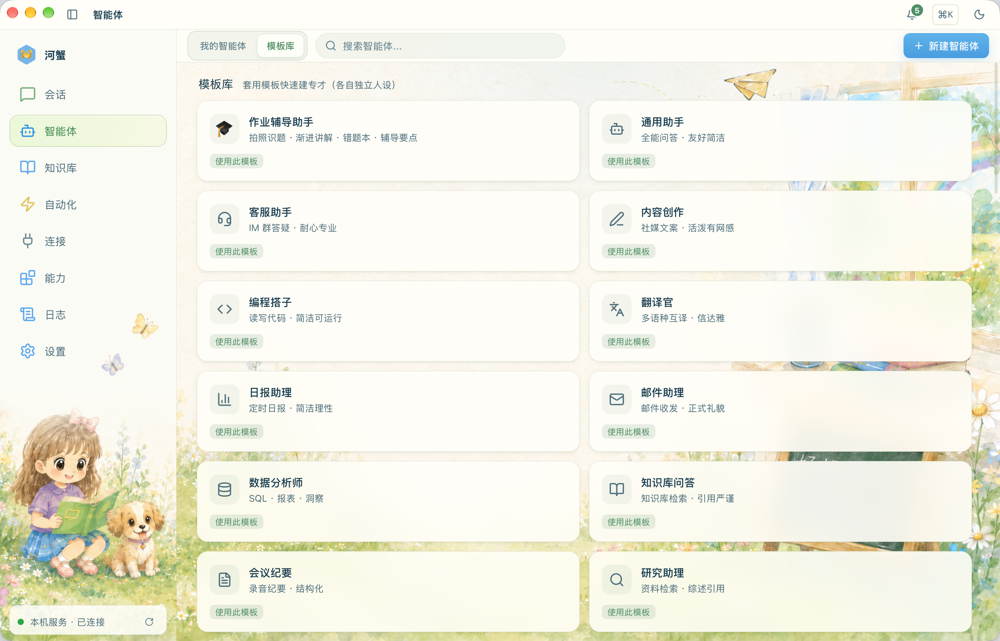
弹出的「创建 K12 辅导助手」窗口先填三样东西：
- 孩子称呼（比如「小红」）——决定助手怎么称呼孩子；
- 年级 · 学期（比如「六年级上」）——这是最关键的一项，它决定 AI 讲题按孩子的年级和教材进度选方法，不会拿初中的公式去压小学的孩子；
- 数学教材版本（人教版 / 北师大版 / 苏教版）——当前只在这里配置数学教材，其他学科无需逐项设置。
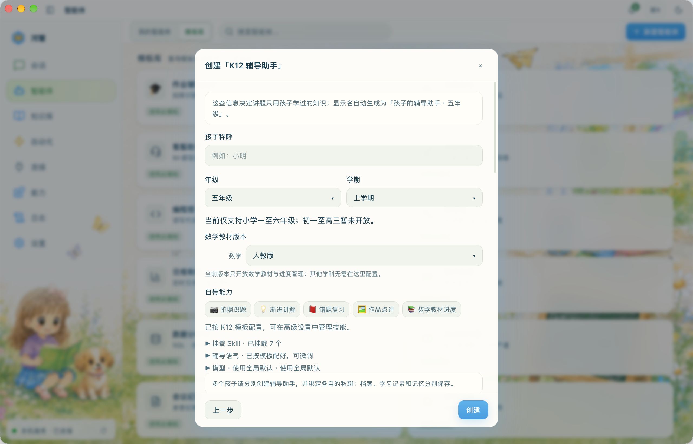
模型默认跟随全局配置。想给这个助手单独指定，就展开档案里的「模型」，选服务商和模型再保存；建好以后也能从「编辑档案」进去改。
显示名会自动生成成「小红的辅导助手 · 六年级」。点「创建」后，页面自动回到「我的智能体」。家里有两个孩子，就分别建两个——每个孩子的错题、学情、记忆分别保存。下面的演示以六年级上学期为例。
每张助手卡片上三个按钮记住就够用：「进入辅导」拍作业、讲题；「学习档案」看错题、安排复习；「编辑档案」改称呼、年级、教材进度和模型。

想看看教学能力从哪里来，可以到左侧「能力 → Skills」查看已安装技能。模板已经配好本场景需要的技能，日常辅导直接从孩子的助手进入。

第二步（选做）· 把课本喂给它，讲解更贴教材
这一步不做也能用，但做了以后，AI 讲题就多了你孩子实际用的那本课本作依据。左侧点「知识库」→ 右上角「添加文档」，把教材 PDF 传进去，系统会自动解析、切片、建索引。这里也支持 TXT、Markdown、DOCX；拍好的教材图片先整理成 PDF。
教材 PDF 请自行到网上下载，准备好后再导入知识库；河蟹 AI 不提供教材下载。

传好之后，到知识库的「检索测试」，找一句书里真有的话试试——比如语文六上《草原》的「蒙汉情深」，看看能不能找到对应原文。
数学教材还差一步：回到助手的「编辑档案 → 数学教材与当前进度」，等目录准备好，选可确认的「关联教材文件」，设置「当前单元」，需要时补课时或页码，最后点「保存」。
教材能检索到正文，和目录已准备好、可以关联进度是两件事；以档案里的教材处理状态为准。关联并保存后，同步巩固按这份进度准备；实际引用到教材原文时，才有「📖 依据课本」的依据。
第三步 · 进入辅导，先试一道文字题
点助手卡片上的「进入辅导」，就进了聊天界面。顶部有「辅导 / 学习档案 / 学情」三个页签。先发一道文字题试试，比如：「一本书 120 页，第一天看了全书的 1/6，第二天看了余下的 1/4，第二天看了多少页？」

第四步 · 发一张作业照片，自动识别、自动批改
这是最常用的一步。在辅导界面的普通输入框添加、拖入或粘贴作业照片，发出去。学科和任务类型由系统自动识别：写过的作业走批改，空白卷走解题，作文、美术作品走点评。清楚的内容自动处理，不用先选学科，也不用逐题点确认。

展开「处理过程」，可以看到图片识别、题目与作答识别、逐题处理、作答批改、家长讲题指南、批改图生成等实际步骤。题目类作业批改完成后，先看批注原图和整页摘要，再展开需要关注的题；正确题合并收起，原始作答、正确答案、错因和家长讲法放在对应题目里。


经过自动识别仍读不清的题，会在结果里标「无法识别」，不猜答案、不判错、不写进错题或掌握结论；其余可识别题照常完成。你愿意补拍时，之后再发一张即可。如果完成后发现题干或原始作答读错了，可以按对应题目的题源入口重新核对；纠正识别不算孩子又做了一次，也不会改掉后续真实作答记录。
小贴士：已作答作业按孩子真实写下的内容批改，判错的自动进错题本；已作答卷里漏做的题，会与已作答题分开呈现。整张空白卷则生成家长讲题指南，不会替孩子编一个「学生答案」再假装批改。
第五步 · 看家长讲题指南，再看结论的依据
空白卷也直接从辅导输入框发进去。识别后，任务会显示「空白卷 · 家长讲题指南」，先识题、分题，再逐题求解：

展开「处理过程」，可以看到图片识别、题目与作答识别、逐题处理、题目求解和家长讲题指南的进度。
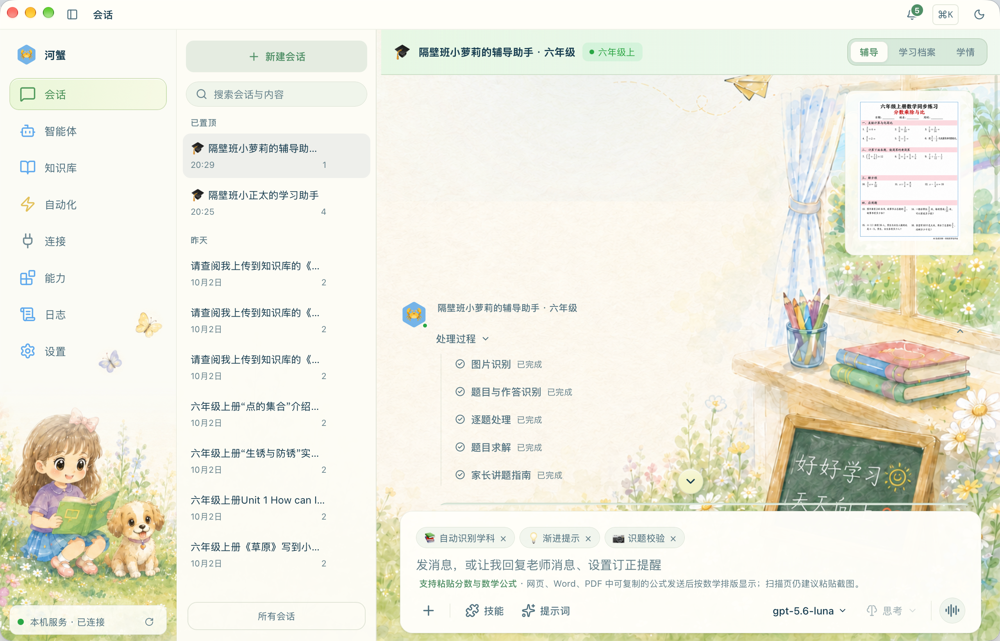
完成后的「空白卷 · 家长讲题指南」按原题顺序展开。每道题有答案、必要步骤、本年级方法、易错点、家长怎么讲、可以追问什么，以及怎么检查。先把自己要讲的过程看明白，再带孩子做：
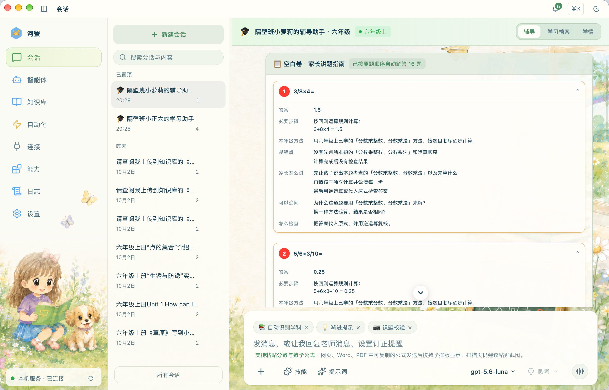
已作答作业里，答案对但过程有问题会单独指出，不直接算作错题；「无法识别」也不等于答错。再留意结果或辅导要点里的验算与来源标记：
- 📖 依据课本——有实际检索到的、已关联教材的原文依据；
- ✅ 已程序验算——核对这道题实际覆盖的计算依据与结果；不能仅凭一段普通文字回答，就当作程序验算通过；
- 🧠 学情信号——来自这个孩子自己的错题/学情；
- 🤖 AI 归纳 · 供参考——AI 自己总结的，看到这个就自己再核一眼。
一句话记住：看验算覆盖了什么；带🤖的，多留个心眼。如果原题读错了，再漂亮的解法也要先回到题目本身核对。
第六步 · 错题本：判错的题，自己就攒进来了
点右上角切到「学习档案」页签。批改判错的题会自动落进来，你不用手抄。里面有五个小页签：本周该练 / 全部错题 / 练习集 / 积累 / 作品；「学情」在顶部单独一页。

几个按钮的用法：
- 「本周该练」——把到期该复习的错题拉成一条队列，也能按需准备同步巩固和口算热身；
- 「加入练习集」——准备这条错题对应的复习题，验证后留到练习集里给孩子练（见下一步）；
- 「本周先不练」/「不再复习」——前者只延后当周，后者退出自动复习、以后还可恢复；都不等于孩子已经掌握；
- 「详情」——回看题目、作答和错因；
- 「记一条错题」（右上角）——没拍照批改的题也能手动记：老师口头讲评的、课外册子上的、孩子自己说没懂的，题目和作答填进去就排进复习队列。
点「详情」先回看题目原文、知识点和错因，知道孩子错在哪，再回列表准备练习。
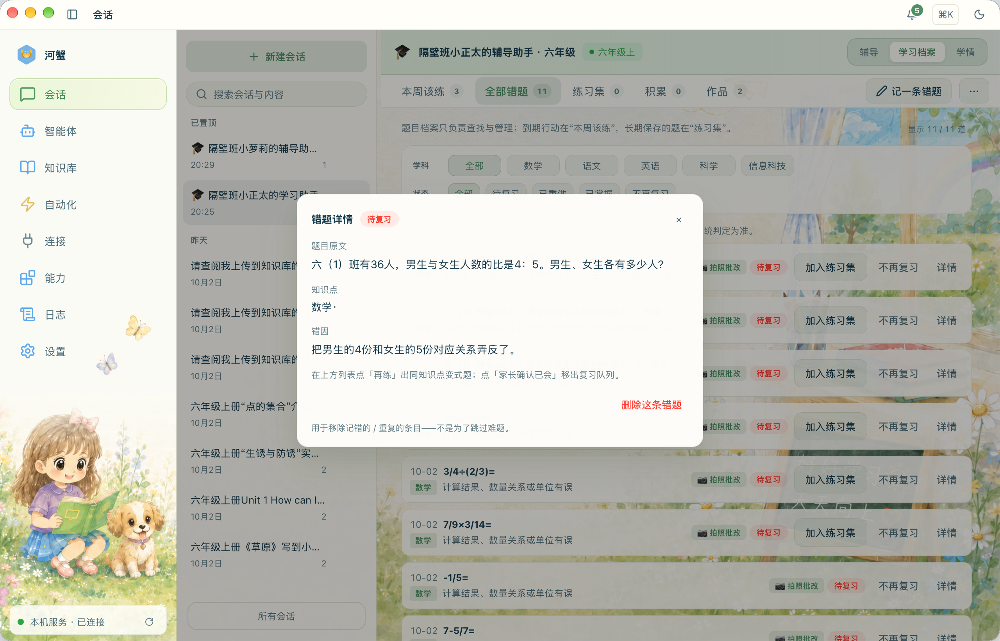
旁边的「积累」页是给语文英语用的——好词好句、古诗随手记进来，不占错题那套复习队列。保存时填内容就行，分类交给它；想拿出来考一考，再点「生成默写题，加入练习集」。
作文和美术作品也直接从辅导输入框发进去，识别后自动点评，在「作品」里回看。点评按「可见证据 / 先这样肯定 / 家长可以这样问或讲 / 下一次只试一个点」给你讲法。作文可以给修改示范和参考稿，孩子原稿单独保留；美术根据画面证据给出点评。

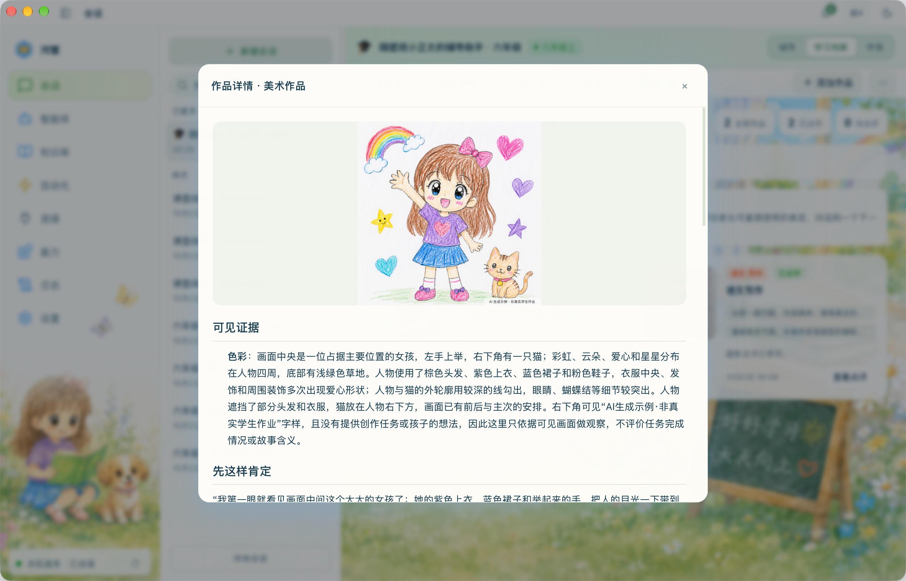
「学情」页是这个孩子的学习概览，随批改、复习等学习记录更新。手动记结果、把题移出复习队列，都不等于系统已经确认掌握：
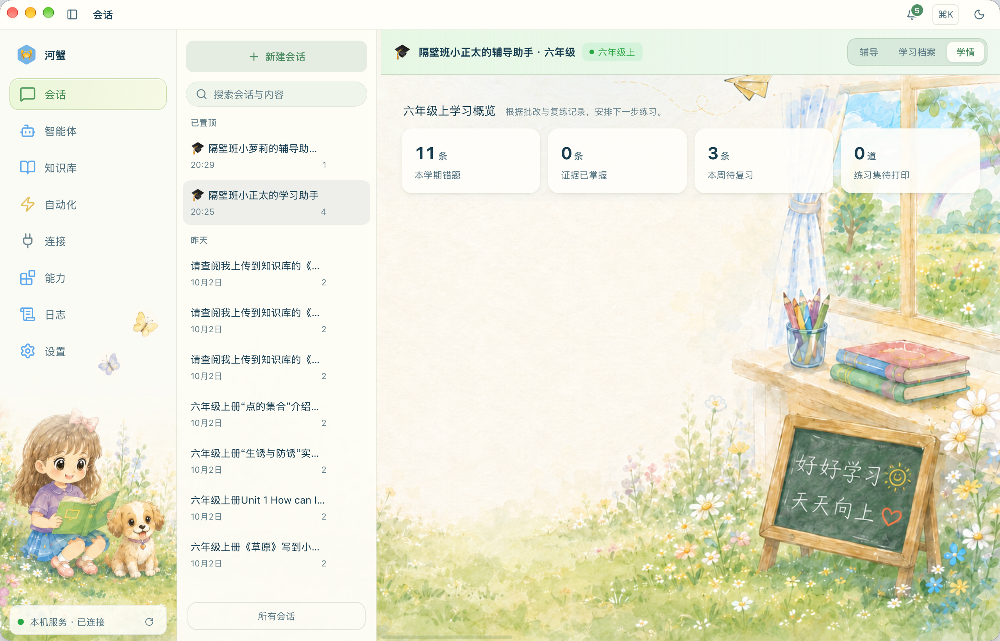
想把学习记录留一份？在「学习档案 → 全部错题」右上角的「…」里，可导出 PDF、Word 或 Markdown，也能进入「备份 / 恢复」。给孩子做的题目卷，则从下面的「练习集」打印。
第七步 · 准备复习，做完再拍照回传
在还没入集的错题右侧点「加入练习集」，它会准备对应的复习题。数学会围绕同一个知识点换数、换情境，让孩子抓住方法；语文、英语的字词则按原字词准备默写题。

新题要验证通过才进练习集，失败会留在原处提示。孩子真实作答、系统复批、再按复习间隔积累证据，才会走到「已掌握」。
要打印？「练习集」排好题目卷，答案留给你
学习档案里点「练习集」→「打印题目卷」，已加入的题会排成一张卷子。先看预览，再走系统打印窗口；想留成文件，预览里可以「另存 PDF…」。题目卷给孩子，答案卷留给家长，不要把带答案的那份一起递过去。
想发到手机，就点「发送到…」，卷子会发到这个助手当前有效绑定的全部私聊目标，不用选收件人。打印成功或创建发送任务后，题目固定成历史卷；取消打印不会清掉待打印的题。
孩子做完，直接把作答照片发进「辅导」输入框，或发到已绑定的钉钉私聊。它会自动识题，并对照这个孩子的历史错题和练习卷；不用先选「新作业还是复习」，也不用先找是哪一张卷。保留卷面号和题号，更容易对回原卷。
能可靠对应的真实作答才更新复习记录；对不上原卷，也会按本次作业批改，不会猜着改旧卷的状态。一次只做了一部分，可以以后补传；同一张练习卷里，已判定题的相同复批结论不会重复推进复习记录。历史卷里也保留了「回传作答」入口。不方便拍照，可以「手动记结果」作家长记录，但「证据已掌握」仍由真实作答和系统复批积累。
让它自己动 · 错题卷周五晚上七点自动来
最后一公里往往是「家长根本想不起来打开 App」。创建辅导助手时，系统会自动为孩子注册四个定时任务——到点自动处理该复习的内容和回传提醒：
| 任务 | 什么时候 | 推给你什么 |
|---|---|---|
| 错题卷 | 每周五 19:00 | 到期错题的原题文字清单，不含答案 |
| 回传提醒 | 每天 20:00 | 前一天已打印或发送、还没完成回传的卷子；同一张卷只提醒一次 |
| 春季学期确认 | 3 月 1 日 09:00 | 该换学期了，确认后再更新档案 |
| 秋季学期确认 | 9 月 1 日 09:00 | 该升学期了，档案要不要更新 |
如果创建后提示「自动提醒未完整注册」，到「自动化 → 定时任务」检查这四项任务，再进入孩子助手的「编辑档案」保存一次，重试补齐缺失任务；已有任务会保留。

它们没内容就不打扰你——没有到期错题的那个周五，你不会收到一条「本周暂无错题哦~」的废话。周五推送的是到期原题的文字清单，不会自动生成 PDF 或把新题加入「练习集」。要准备变式题并打印，回到「本周该练」逐题加入练习集。学期到了它还会主动问你档案要不要更新，家长确认后更新。
手机上也能用 · 绑好钉钉，私聊辅导助手
不想每次都坐到电脑前？把辅导助手绑到钉钉，手机上私聊机器人、发作业照片就能用，电脑上的河蟹保持运行。这是全篇最"技术"的一步——因为要去钉钉自己的开发者后台建一个机器人。别怕，跟着下面的顺序走；本版 K12 手机通道仅支持钉钉一对一私聊。
① 先在河蟹这边：左侧点「连接」→「添加」，弹出「新建通道和账号」，选钉钉。
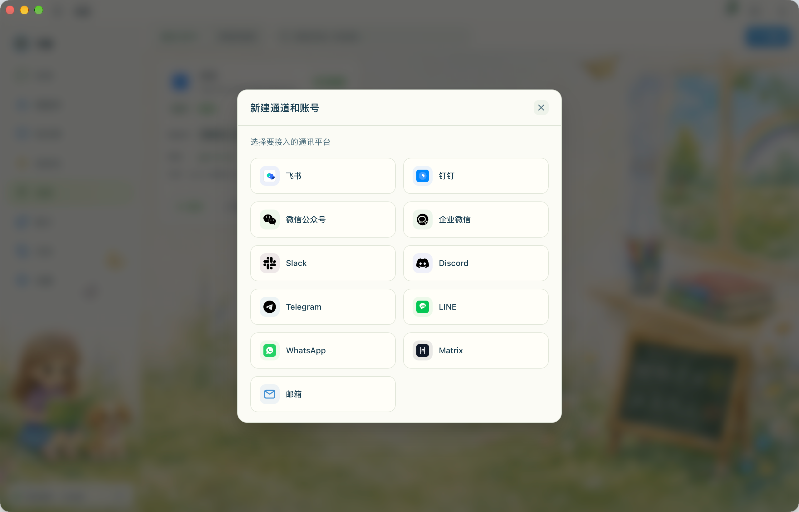
② 去钉钉开发者后台建个机器人：选了钉钉，它要一串"机器人凭证"。按表单里的「开发文档」创建「企业内部应用」，名字随便起（比如"小红的作业辅导助手"），启用机器人，消息接收使用Stream 模式，不需要自己配公网回调地址。
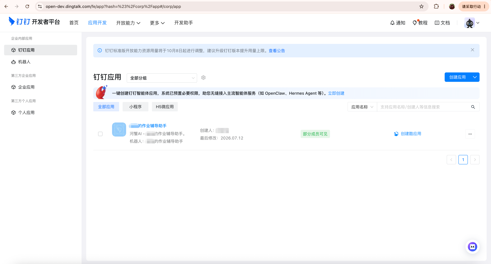
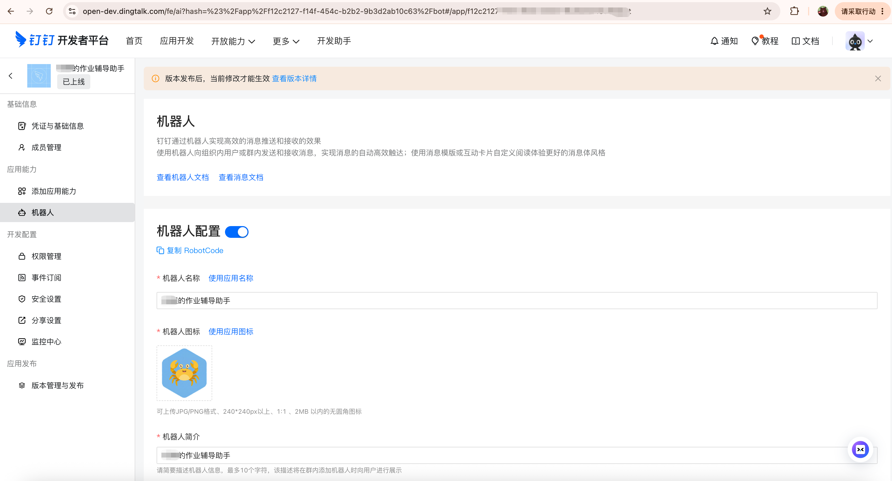
进入应用的「权限管理」，按所用机器人接入文档核对消息收发和图片、文件处理所需权限。下图帮助你找到页面位置，图中已开通项目不是本教程的权限清单。
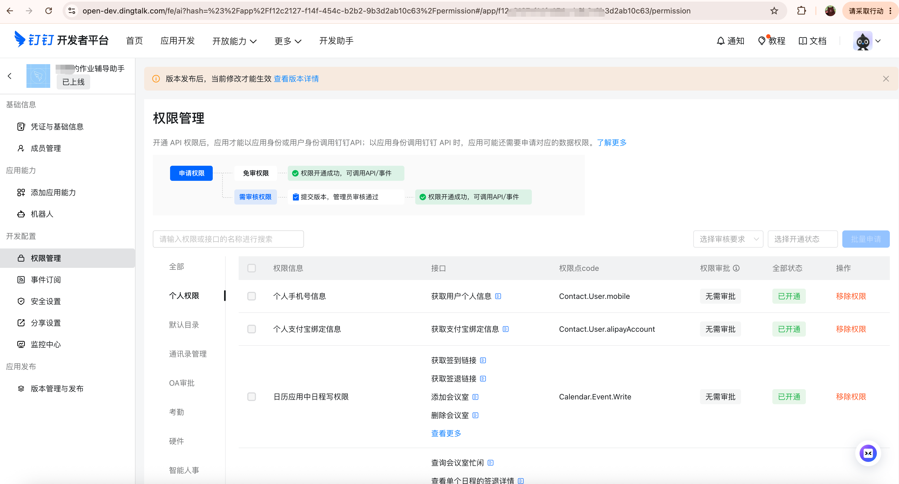
权限配置完成后，再发布应用版本，并确认家长自己的钉钉账号在可用范围内。
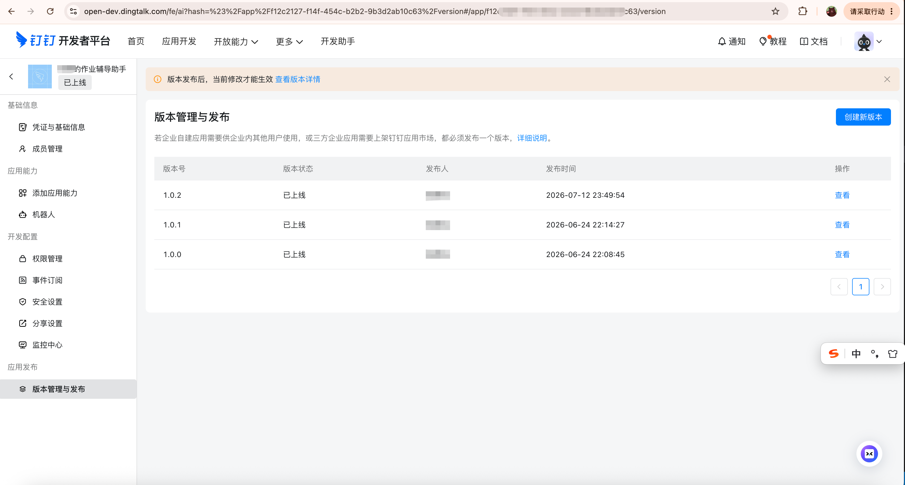
③ 回河蟹填凭证、绑智能体：把上面拿到的 AppKey / AppSecret / RobotCode 填回连接页，创建连接，再在这张连接卡片的「智能体」里选孩子的辅导助手。看到钉钉「已连接」以后，还差最后一步：用家长自己的手机私聊机器人，先发一条消息，让这段真实私聊成为助手的接收目标。

首次私聊完成后，发张作业照片试试，直接在同一私聊核对自动返回的结果：已作答的题目类作业返回批改正文和批注图，空白题返回答案与讲法，作文和画作返回点评正文。


上面自动化推送的错题卷、回传提醒，也会发到绑好的私聊里。「发送到手机」会一次发到这个助手当前有效绑定的全部接收目标，不用再选人。要提醒一句：内容发进钉钉，就到了第三方平台——这是你主动开的第三方通道，开关始终在你手里。
诚实说 · 这几件事你要心里有数
照河蟹的老规矩，把还没做满的地方摆给你，免得你踩空：
- 批改图仍受照片质量影响——批改的 ✓/✗ 叠在原图能可靠定位的题目旁；位置不可靠的题附文字说明，不把红叉画到别的题上。原图保留，批注另生成一份；如果提示批改图生成失败，这次结果还不完整，按提示处理后再查看批改图。
- 批改准不准，很依赖模型——识别手写、批改的准确率是整个产品的地基。使用云模型时，图片、题目和相关上下文会按任务需要发给所选服务商，也可能产生多次调用；能确定计算的题优先由当前服务验算。本文连接本机服务，错题本、学情、档案保存在本机。
- 解法硬边界目前主要覆盖数学——数学讲解结合年级、学期和已关联教材进度约束方法；其他学科按小学范围和对应教学 Skill 辅导。初中、高中属于长远规划。
- 「无法识别」和处理失败要分清——照片里的题干或作答读不清，可以以「无法识别 · 未判断对错」结束，不猜答案、不算错题；想继续再补拍清晰照片。连接或模型调用失败则按错误提示处理，先确认这次任务的状态，别连续重复发送。
- 定时任务靠本机在线——电脑关机、休眠，或河蟹服务退出时，无法按点执行；手机收消息也依赖电脑上的服务和渠道连接。需要定时推送，就让它保持运行。
一句话收尾：看清它验算了什么，再拿着答案和讲法去教孩子；带🤖的，随手核一眼。拍照搜题给的是一个答案；这套工具想给你的，是把这道题教会孩子的那二十分钟。
建档一次，天天省心。
发作业、看批改、照着讲、再练回传——
让每一次辅导，都接得上孩子下一次的进步。
官网教程：https://hexclaw.net/zh/docs/k12
想知道它凭什么可信？看姊妹篇《河蟹 AI 让你「父慈子笑」：首个灯塔场景的 K12 工程实践》——验算证据链、本地错题资产、编译期可移除的场景包，那篇讲原理。